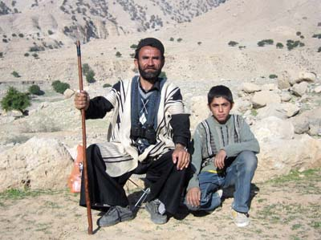
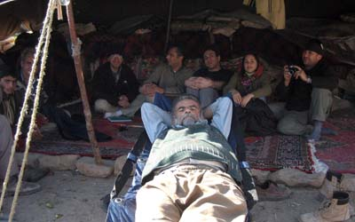
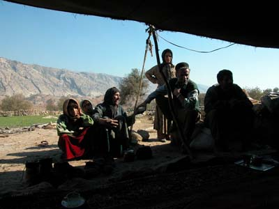
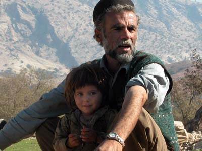

Copyright © Ali Parsa 1998-2011
All rights reserved
| Garmsir |  |
 | Hossein |
| Hossein's tent, with his wife and many daughters. |  |
| Hossein with his youngest daughter, Hedieh. |  |

Copyright © Ali Parsa 1998-2011
All rights reserved